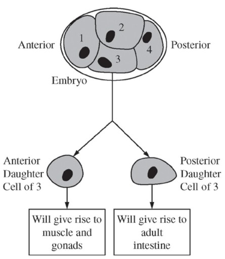

The diagram above shows a developing worm embryo at the four-cell stage. Experiments have shown that when cell 3 divides, the anterior daughter cell gives rise to muscle and gonads and the posterior daughter cell gives rise to the intestine. However, if the cells of the embryo are separated from one another early during the four-cell stage, no intestine will form. Other experiments have shown that if cell 3 and cell 4 are recombined after the initial separation, the posterior daughter cell of cell 3 will once again give rise to normal intestine. Which of the following is the most plausible explanation for these findings?